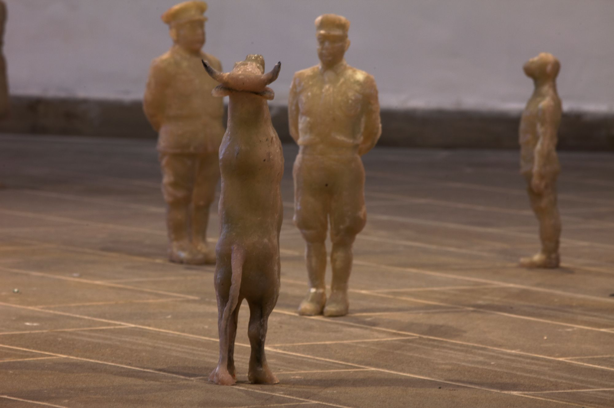
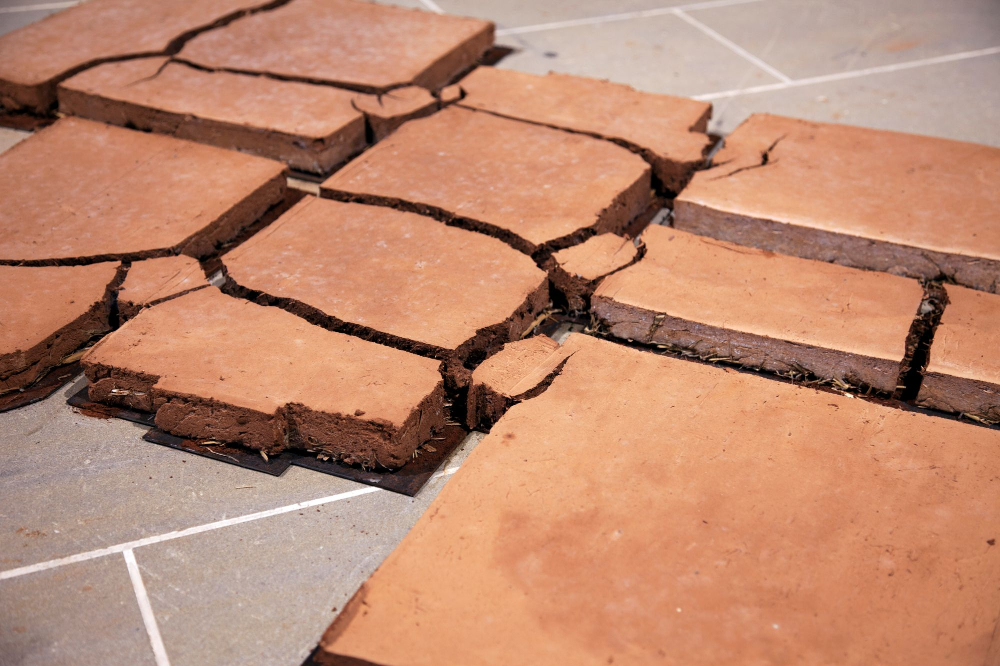
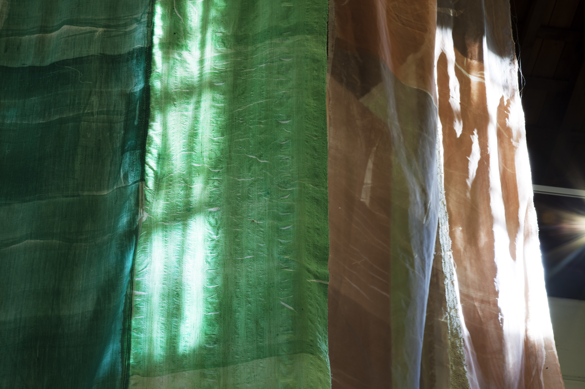
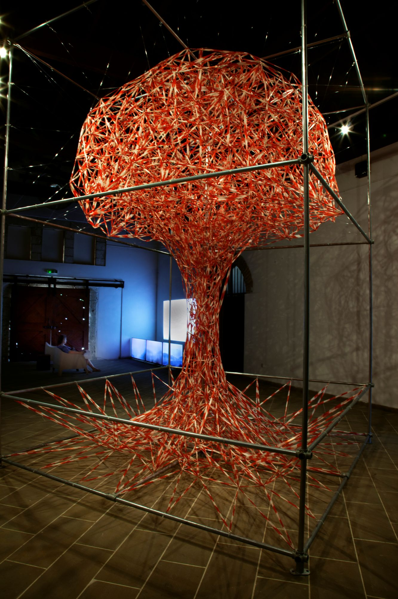
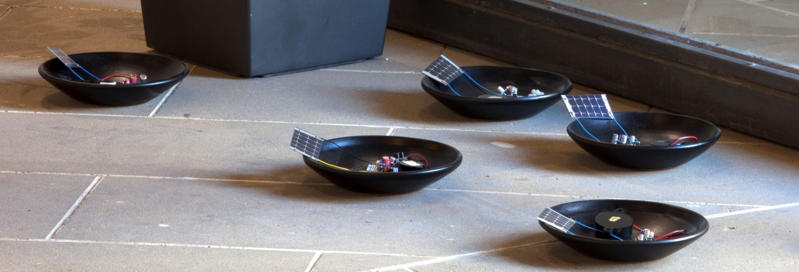

Larnaca Municipal Art Centre,
October, November 2024
Danae Patsalou 2023
How do we reflect on a world that is already forgetting?
As you enter the gallery, for the exhibition Art for a Wounded Planet, you
will stand in front of a painting entitled The World Forgetting,
by theWorld Forgot. It is by Danae Patsalou, 75 years separate her from one of
Cyprus most recognised artists Costas Economou, whose landscapes are imbuedwith a
passion for the rural.
Καθώς μπαίνετε στη πινακοθήκη για την έκθεση Τέχνη για ένα Πληγωμένο
Πλανήτη θα σταθείτε μπροστά από ένα πίνακα με τίτλο
Ο κόσμος που ξεχνά, από ένα κόσμο που ξέχασε. Είναι της
Δανάης Πάτσαλου, εβδομήντα πέντε χρόνια την χωρίζουν από ένα
από τους πιο αναγνωρισμένους ζωγράφους της Κύπρου, τον Κώστα
Οικονόμου, του οποίου τα τοπία είναι εμποτισμένα με ένα πάθος για την ύπαιθρο.
Costas Economou
Twelve intergenerational artists from Cyprus and Europe ask you to consider the land,
skies and oceans that have been taken so much for granted in the Anthropocene epoch.
Here artists provide a space for the reimagining of a world, that both warns and
respects its resources on a global scale. You will move through the galleries and
you will encounter various installations.
Δώδεκα διαγενεακοί καλλιτέχνες από την Κύπρο και
την Ευρώπη σας ζητούν να σκεφτείτε τη γη, τους
ουρανούς και τους ωκεανούς, πράγματα που θεωρήσαμε
τόσο πολύ δεδομένα στην Ανθρωποκένο εποχή. Εδώ οι
καλλιτέχνες δημιουργούν ένα χώρο για να ξαναφανταστούμε
ένα κόσμο που προειδοποιεί και σέβεται τους πόρους του σε
ένα πλανητικό επίπεδο.
For example, the fiberglass/resin sculptures of Kyriakos Kallis raise
questions as to what constitutes power and Yioula Hatzigeorgiou uses
ash remnants of unknown landscapes.
Andria Zachariou follows the soil traces of her family house in
Karpassia and close by is a coloured pen drawing referencing
consumerist culture by Jasmin Rapti. Sumer Erek’s Brittle Lemons
Collective are memorialized as the dead citrus trees of Karavas.
 Kyriakos Kallis
Για παράδειγμα, τα γλυπτά από υαλοβάμβακα/ρητίνη του Κυριάκου
Κάλλη θέτουν ερωτήματα σχετικά με το τι συνιστά δύναμη και η
Γιούλα Χατζηγεωργίου χρησιμοποιεί υπολείμματα στάχτης από άγνωστα τοπία.
Η Άντρια Ζαχαρίου ακολουθεί τα χωματένια αχνάρια του πατρικού της στη Καρπασία,
ενώ δίπλα βρίσκεται ένα σχέδιο με χρωματιστά πενάκια της Γιασεμί Ράπτου
με αναφορές στον καταναλωτικό μας πολιτισμό. Η εγκατάσταση Brittle Lemons
Collective του Σούμερ Έρεκ μνημονεύει τις πεθαμένες πορτοκαλιές του Καραβά.

Andria Zachariou
Evgenia Vasiloude constructs fragile but powerful earthscapes by
stitching found/old cloths suspended from the sky and Janis Jefferies
has made three wall pieces dyed, digitally printed blue/ grey ‘oceanic’
manipulated images on linen.
 Evgenia Vasiloude 2024
Andreas Savva in The End Has Already Happened, conjures a mushroom
cloud made of plastic tape whilst Christoph Brünggel
sound work is generated by tiny solar panels.

Andreas Savva 2024
Η Ευγενία Βασιλούδη κατασκευάζει εύθραυστα αλλά ισχυρά τοπία γης
ράβοντας παλιά/βρεμένα υφάσματα που αιωρούνται από τον ουρανό και
η Janis Jefferies έχει δημιουργήσει τρία έργα τοίχου με εκτυπωμένες
ψηφιακά μπλε/γκρι 'ωκεάνιες' εικόνες σε λινό.
Ο Αντρέας Σάββα στο The End Has Already Happened,
δημιουργεί ένα μανιταρόμορφο σύννεφο από πλαστική ταινία,
ενώ το ηχητικό έργο του Christoph Brünggel παράγεται από
μικρά ηλιακά πάνελ.
 Christoph Brünggel 2024
The title of Yiannos’ Economou multi-channel video installation Therianthropes
evokes the integration of animal and human identities.
Ο τίτλος της πολυκάναλης βίντεο εγκατάστασης του Γιάννου Οικονόμου Θηριάνθρωποι παραπέμπει
στην αφομοίωση της ανθρώπινης και φυσικής ταυτότητας.


.jpg)
.jpg)
.jpg)
.jpg)
.jpg)